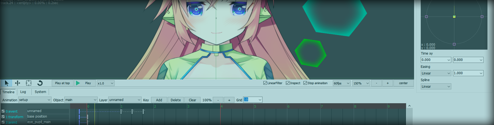
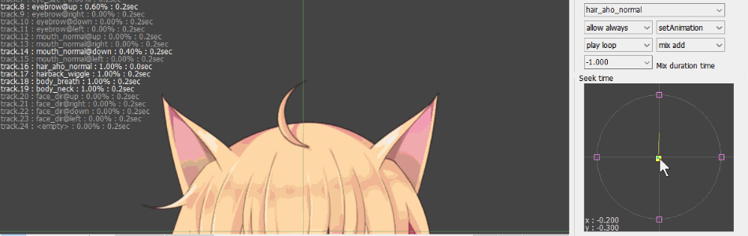

Multi track control tool
You can control multiple spine -animation-tracks with timeline.
It is Useful for facial expression changes that use many tracks.
複数のSpine アニメーショントラックをタイムラインでコントロールすることが出来ます。
表情変化のようなトラックが多くなるアニメーションでは役立つ筈です。
複数の
Control value from appside
You can control the spine -animation from the application side using runtime or unity -components too easy.
ランタイムやunity コンポーネントを使って、簡単にアプリケーション側からSpine アニメーションをコントロールすることが出来ます。
ランタイムや


In preparation. just for a moment :-Q
現在準備中。ちょっとまってね！
In preparation. just for a moment :-Q
現在準備中。ちょっとまってね！
information
editor platform : windows application
file format : binary only (little-endian. support big-endian platform.)
runtime : c++ c-sharp delphi unity-component (purecode. no dependency.)
sample : c++ c-sharp delphi unity
file format : binary only (little-endian. support big-endian platform.)
runtime : c++ c-sharp delphi unity-component (purecode. no dependency.)
sample : c++ c-sharp delphi unity
copyright Ko-Ta Takeuchi.